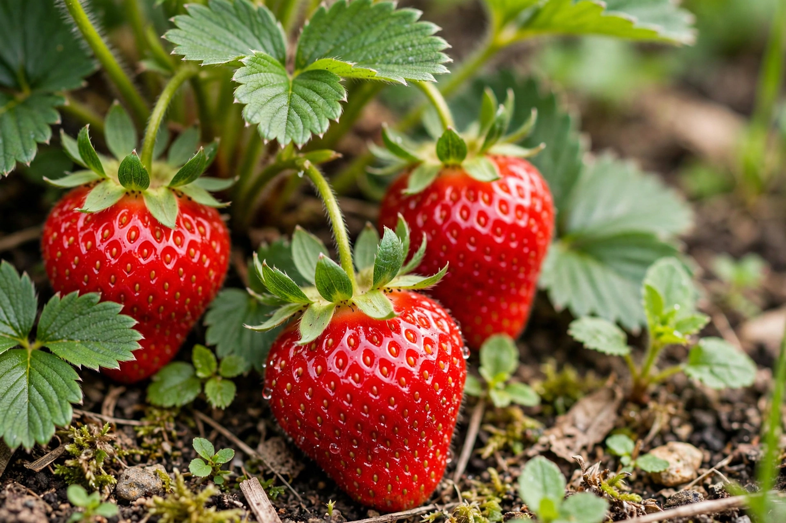

Strawberry
From Wikipedia, the free encyclopedia

The garden strawberry (or simply strawberry, Fragaria × ananassa) is a hybrid fruit plant widely grown for its bright red, fragrant, sweet-tart fruit. It arose in Brittany, France, in the 18th century from a cross between Fragaria virginiana from eastern North America and Fragaria chiloensis brought from Chile. Botanically the strawberry is not a true berry: the fleshy part is an enlarged receptacle, and the true fruits are the small seed-like achenes studding its surface. China is the largest producer, followed by the United States, where California grows the great majority of the crop.
History
Wild strawberries were eaten across Europe and the Americas for millennia, and the woodland strawberry (F. vesca) was cultivated in European gardens from early modern times. The Chilean species reached Europe in 1714 with the French officer Amédée-François Frézier, but the large-fruited modern strawberry only appeared after accidental and then deliberate crossing with the Virginian species in French gardens in the 1750s. Victorian plant breeders in England, notably Michael Keens and later Thomas Laxton, developed many classic cultivars. Commercial production shifted in the 20th century to California, whose coastal valleys allow nearly year-round harvests.
Cultivation
Strawberries are low-growing perennials spreading by runners (stolons). Cultivars are classed as June-bearing, everbearing, or day-neutral; day-neutral types, largely developed in California, fruit whenever temperatures are moderate. Because the fruit is soft and does not ripen after picking, strawberries are harvested by hand at near-full ripeness, making them labour-intensive and highly perishable. Plasticulture — raised beds under plastic mulch, with drip irrigation — is the standard commercial method in many regions.
Culinary use
Strawberries are eaten fresh, often with cream (a combination so tied to the Wimbledon tennis championships that it is a British summer emblem), and made into jam, pies, ice cream, and flavourings. Flavour depends strongly on cultivar and ripeness; many commercial varieties are bred for firmness and shelf life over aroma. The fruit is rich in vitamin C and manganese and is among the most popular fruits in the world by consumer demand, if not by tonnage.